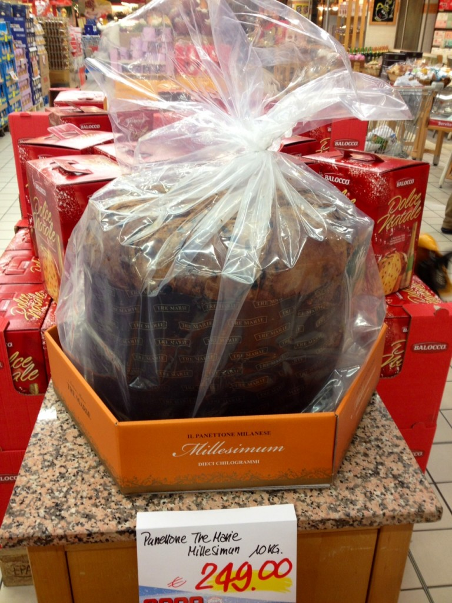
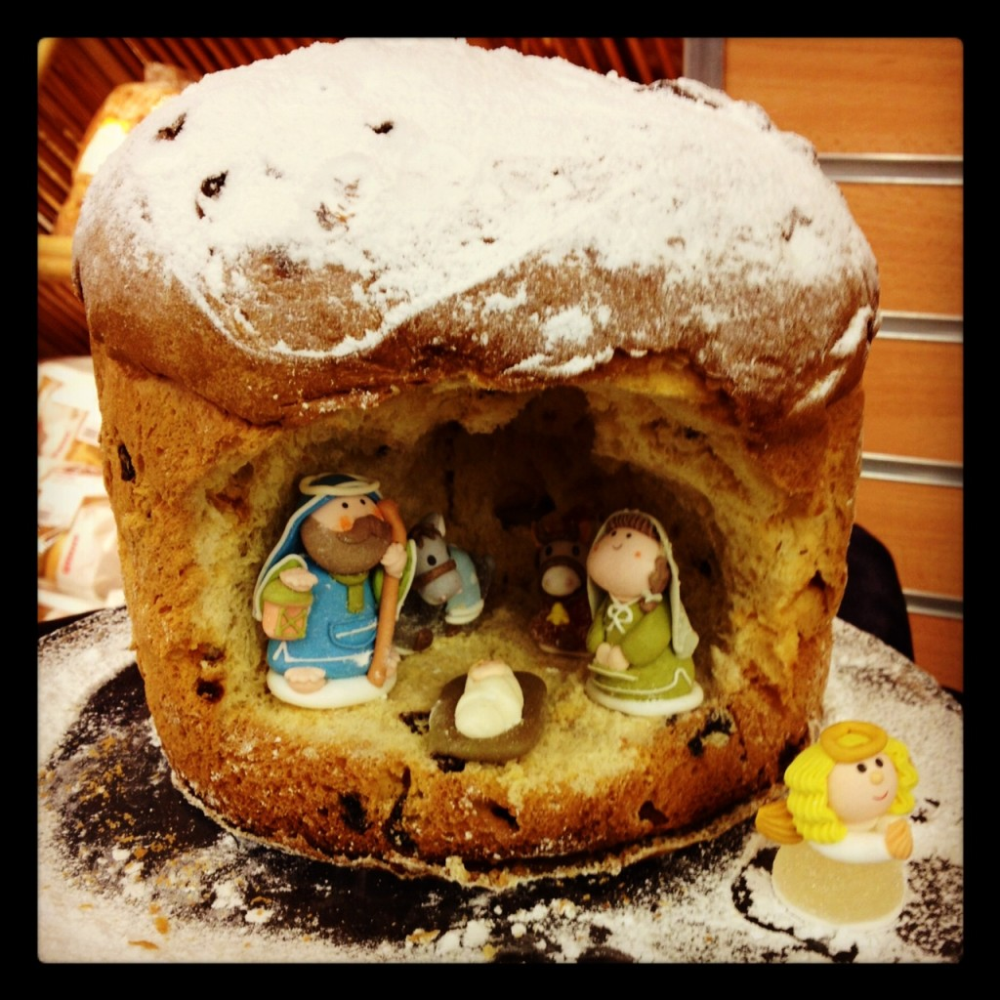

But what really impressed me was a Nativity scene made with a simple Panettone and edible Nativity figurines.
If you want to replicate this great idea and you live in the States, you can easily find the Panettone either at Trader's Joe or World Market. As for the Nativity figurines, I wasn't able to find any edible set online, but I did find some figures that are really cute and would be perfect for this project: I'm sure your guests will love it!